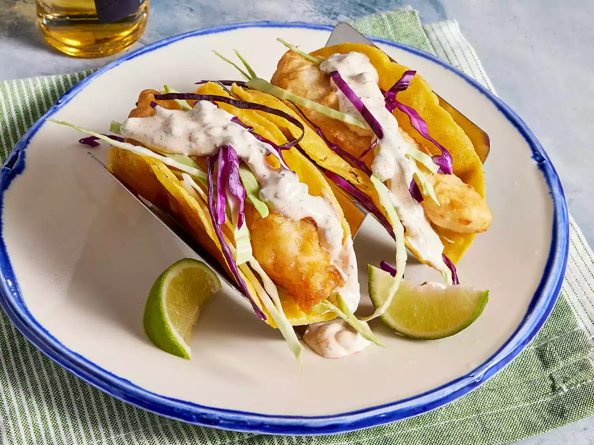

Home
Fish Tacos

Description
These crispy fish tacos with shredded cabbage and a spicy homemade citrusy sauce are just delicious! Serve with pico de gallo and lime wedges to squeeze on top.
This recipe makes perfectly seasoned, beer-battered crispy fish for tacos and tops them with a homemade zesty sauce and shredded cabbage.
Ingredients
Beer Batter:
- 1 cup all-purpose flour
- 2 tablespoons cornstarch
- 1 teaspoon baling powder
- 1/2 teaspoon salt
- 1 cup beer
- 1 large egg
Taco Sauce:
- 1/2 cup plain yogurt
- 1/2 cup mayonnaise
- 1 lime, juiced
- 1 jalapeno pepper, finely minced
- 1 teaspoon minced capers
- 1 teaspoon ground cayenne pepper
- 1/2 teaspoon dried oregano
- 1/2 teaspoon ground cumin
- 1/2 teaspoon dried dill weed
Fish Tacos:
- 1 quart oil for frying
- 1 pound cod fillits, cut into 2 to 3 ounce portions
- 2 tablespoons all-purpose flour, or more as needed
- 1 (12 ounce) package corn tortillas
- 1/2 medium head cabbage, finely shredded
Steps
- To make the beer batter: Combine flour, cornstarch, baking powder, and salt in a large bowl. Blend beer and egg in a separate bowl, then quickly stir into flour mixture until combined with a few lumps remaining.
- To make the sauce: Mix yogurt and mayonnaise together in a medium bowl; gradually stir in fresh lime juice until consistency is slightly runny. Season with jalapeño, capers, cayenne, oregano, cumin, and dill.
- To make the fish tacos: Heat oil in a deep-fryer to 375 degrees F (190 degrees C).
- Dust fish pieces lightly with flour. Set aside.
- Dip floured fish pieces into beer batter. Set aside.
- Fry battered fish in hot oil until crisp and golden brown. Drain on paper towels. Lightly fry tortillas in hot oil until just crisped, but not too crisp. Drain on paper towels.
- Place fried fish in tortillas; top with shredded cabbage and sauce.